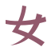

上版侧影浅色深色上版图标，保留作对照相关文件 · 14apple-touch-icon.pngfavicon-16.pngfavicon-32.pngfavicon-48.pngfavicon-dark-forest.svgfavicon-dark.svgfavicon-light-linen.svgfavicon-light.svgfavicon.icofavicon.svgicon-192.pngicon-512.pnglogo-mark.pnglogo-mark.svg
01 初绽花瓣浅色深色舒展花瓣，柔和简洁相关文件 · 9apple-touch-icon.pngfavicon-32.pngfavicon-dark-forest.svgfavicon-dark.svgfavicon-light-linen.svgfavicon-light.svgfavicon.icomark.pngmark.svg
02 翩羽蝴蝶浅色深色流动蝶翼，轻盈灵动相关文件 · 9apple-touch-icon.pngfavicon-32.pngfavicon-dark-forest.svgfavicon-dark.svgfavicon-light-linen.svgfavicon-light.svgfavicon.icomark.pngmark.svg
03 弦月星芒浅色深色弦月与星，偏幻想气质相关文件 · 9apple-touch-icon.pngfavicon-32.pngfavicon-dark-forest.svgfavicon-dark.svgfavicon-light-linen.svgfavicon-light.svgfavicon.icomark.pngmark.svg
04 绢带女字浅色深色女字变成舒展的绢带相关文件 · 9apple-touch-icon.pngfavicon-32.pngfavicon-dark-forest.svgfavicon-dark.svgfavicon-light-linen.svgfavicon-light.svgfavicon.icomark.pngmark.svg
05 开卷星图浅色深色书页与星光，呼应图鉴相关文件 · 9apple-touch-icon.pngfavicon-32.pngfavicon-dark-forest.svgfavicon-dark.svgfavicon-light-linen.svgfavicon-light.svgfavicon.icomark.pngmark.svg
06 灵动明眸浅色深色明眸与高光，呼应角色外观相关文件 · 9apple-touch-icon.pngfavicon-32.pngfavicon-dark-forest.svgfavicon-dark.svgfavicon-light-linen.svgfavicon-light.svgfavicon.icomark.pngmark.svg
现用 · 头肩侧影浅色深色当前采用的标志，放在这里对照。相关文件 · 15apple-touch-icon.pngfavicon-16.pngfavicon-32.pngfavicon-48.pngfavicon-dark-forest.svgfavicon-dark.svgfavicon-light-linen.svgfavicon-light.svgfavicon.icofavicon.svgicon-192.pngicon-512.pnglogo.pnglogo.svgsource.png